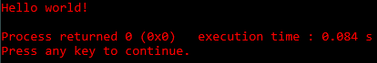

Tutorial de Programação em C
Seções do tutorial
- Como começar a programar em C
- Primeiros passos
- Escrevendo seu primeiro programa em C
- Fazendo comentários no código
- Variáveis
- Comando #define
- Operações Matemáticas
- Coletando dados do usuário
- Comandos if e else
- Switch
Como começar a programar em C
Para começar, você deve baixar um programa que escreva e compile em C. O recomendado para esse tutorial é o CodeBlocks, o qual você pode baixar clicando aqui.
Primeiros Passos
Após baixado e instalado, você deverá criar um novo projeto clicando em Create new project e escolhendo a opção Console application.
A próxima página você poderá pular. Entre C / C++, escolha C.
Em Project title, coloque um nome para seu projeto.
Em Folder to create project in, selecione uma pasta para seu programa.
Aperte Next e em seguida Finish.
Na parte esquerda do projeto clique no + ao lado do nome do seu projeto e vá apertando até aparecer um arquivo chamado main.c que você deverá dar 2 clicks nele para abrir.
Escrevendo seu primeiro programa em C
É comum a todo programador começar seu primeiro programa escrevendo Hello World.
A estrutura básica de um programa em C é:
#include <stdlib.h>
int main()
{
return 0;
}
O #include faz incluir uma biblioteca ao código, sendo a primeira stdio.h(Standard Input Output) e a segunda stdlib.h(Standard Library), que fazem os comandos básicos da linguagem C funcionarem.
Escreva dentro de int main() um Hello World usando:
Não se esqueça do ponto e vírgula após o final.
Para compilar seu programa aperte Ctrl-F9 e para compilá-lo e executar aperte F9
Após compilar e executar, o código deve aparecer assim:

O comando printf(""); serve para aparecer na tela tudo o que está escrito entre os aspas.
Fazendo comentários no código
Você pode escrever comentários para facilitar na hora de ler o código, que não irão aparecer no programa final.
Ex:
Ex 2:
Isso é uma anotação
que utiliza
várias linhas
*/
Variáveis
Veremos 3 tipos de variáveis:
- int (%i ou %d)
- float (%f)
- char (%c)
A variável int aceita apenas os números inteiros. Ex: 7
A variável float aceita números quebrados até 32 casas decimais. Ex: 7,56842135...
A variável char aceita apenas caracteres de a-z. Ex: 'g'
Ex:
float exemplo2 = 7.52;
char exemplo3 = 'h';
printf("Resultados: \n%i \n%f \n%c", exemplo1, exemplo2, exemplo3);
Após compilar e executar, o código deve aparecer assim:
Comando #define
O #define funciona de forma semelhante às variáveis. Ele deve ser inserido imediatamente abaixo do último #include.
OBS: caso o número seja quebrado, deverá usar %f para representá-lo, caso use %i, ele irá aparecer como número inteiro.
Ex:
#include <stdlib.h>
#define PI 3.14
return 0;
}
Após compilar e executar, o código deve aparecer assim:
Para aparecer uma certa quantidade de números após a vírgula, use %.6f, trocando o 6 pela quantidade que você quiser mostrar.
Operações Matemáticas
Em C você pode realizar facilmente operações matemáticas básicas, como:
Adição +
Subtração -
Multiplicação *
Divisão /
Resto de divisão %
Ex:
int y = 2;
printf("%i\n", x + y); //Aqui mostrará o resultado 12 (10+2)
printf("%i\n", x - y); //Aqui mostrará o resultado 8 (10-2)
printf("%i\n", x * y); //Aqui mostrará o resultado 20 (10*2)
printf("%i\n", x / y); //Aqui mostrará o resultado 5 (10/2)
printf("%i\n", x % y); //Aqui mostrará o resultado 0 (resto de 10/2)
Após compilar e executar, o código deve aparecer assim:
Coletando dados do usuário
Você pode coletar o dado de um usuário e inserí-lo em uma variável sem valor definido usando o comando scanf("");.
Ex:
char sexo;
printf("Digite sua idade: ");
scanf("%i", &idade);
printf("Digite seu sexo (M ou F): ");
scanf("\n%c", &sexo);
printf("Idade: %i \nSexo: %c", idade, sexo);
Caso não coloque, o programa irá pular a linha do scanf (Exemplo aqui)
OBS: você deve colocar um & (e comercial) antes da variável que você quer inserir o valor do scanf.
Após compilar e executar, o código deve aparecer assim:
Comandos if e else
Em poucas palavras, o if é um comando de condição, e else é o que acontecerá caso não se encaixe em nenhum if.
Para botar vários if, após o 1º use if else ao invés de usar apenas if, o else final continua igual.
Ex:
printf("Digite sua idade: ");
scanf("%i", &idade);
if(idade == 18) //Se idade for igual a 18
else if(idade < 18) //Se idade for menor que 18
else //Se não for nenhuma das opções acima
Após compilar e executar, o código deve aparecer assim:
Possibilidade 1 (if):
Possibilidade 2 (if else):
Possibilidade 3 (else):

Caso o IF ou o else dê mais de uma linha, você deverá usar o comando entre chaves
Ex:
{
}
else //Caso não tenha 18 anos, também com 2 linhas.
{
}
Para testar 2 ou mais valores ao mesmo tempo usamos && ("e") e || ("ou").
Ex 1:
Ex 2:
Switch
O conceito de switch é bem parecido com o do if e else, porém você só pode para verificar uma informação, não há opção de verificar se é maior ou menor, entre outros. Nesses casos você deve usar o if e else.
Ex:
printf("Digite uma vogal: ");
scanf("\n%c", &vogal);
switch(vogal)
{
}
Após compilar e executar, o código deve aparecer assim:
Possibilidade 1:
Possibilidade 2:

Possibilidade 3: